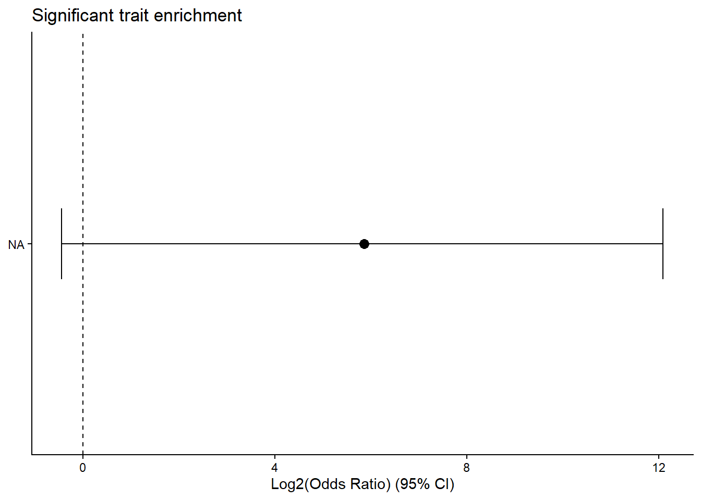
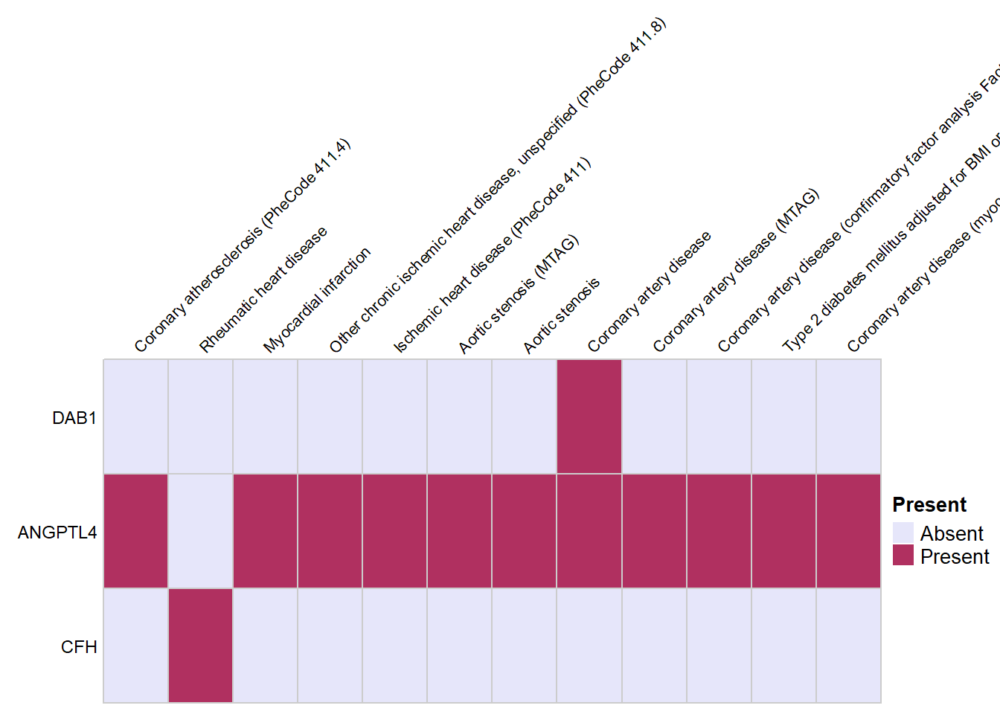

Last updated: 2026-08-19
Checks: 7 0
Knit directory: IFNy/
This reproducible R Markdown analysis was created with workflowr (version 1.7.2). The Checks tab describes the reproducibility checks that were applied when the results were created. The Past versions tab lists the development history.
Great! Since the R Markdown file has been committed to the Git repository, you know the exact version of the code that produced these results.
Great job! The global environment was empty. Objects defined in the global environment can affect the analysis in your R Markdown file in unknown ways. For reproduciblity it’s best to always run the code in an empty environment.
The command set.seed(20260506) was run prior to running
the code in the R Markdown file. Setting a seed ensures that any results
that rely on randomness, e.g. subsampling or permutations, are
reproducible.
Great job! Recording the operating system, R version, and package versions is critical for reproducibility.
Nice! There were no cached chunks for this analysis, so you can be confident that you successfully produced the results during this run.
Great job! Using relative paths to the files within your workflowr project makes it easier to run your code on other machines.
Great! You are using Git for version control. Tracking code development and connecting the code version to the results is critical for reproducibility.
The results in this page were generated with repository version d2ad056. See the Past versions tab to see a history of the changes made to the R Markdown and HTML files.
Note that you need to be careful to ensure that all relevant files for
the analysis have been committed to Git prior to generating the results
(you can use wflow_publish or
wflow_git_commit). workflowr only checks the R Markdown
file, but you know if there are other scripts or data files that it
depends on. Below is the status of the Git repository when the results
were generated:
Ignored files:
Ignored: .Rhistory
Ignored: .Rproj.user/
Ignored: data/IFNy_data/
Untracked files:
Untracked: analysis/IFNy_GSEA_Analysis.Rmd
Unstaged changes:
Modified: analysis/IFNy_Cormotif_Analysis.Rmd
Modified: analysis/IFNy_DEG_Analysis.Rmd
Deleted: analysis/IFNy_Metadata.Rmd
Modified: analysis/IFNy_RNASeq_Quality_Check.Rmd
Deleted: analysis/Practice_code.Rmd
Note that any generated files, e.g. HTML, png, CSS, etc., are not included in this status report because it is ok for generated content to have uncommitted changes.
These are the previous versions of the repository in which changes were
made to the R Markdown
(analysis/IFNy_GWAS_hits_Analysis.Rmd) and HTML
(docs/IFNy_GWAS_hits_Analysis.html) files. If you’ve
configured a remote Git repository (see ?wflow_git_remote),
click on the hyperlinks in the table below to view the files as they
were in that past version.
| File | Version | Author | Date | Message |
|---|---|---|---|---|
| Rmd | d2ad056 | Harsha Tamtam | 2026-08-19 | wflow_publish("analysis/IFNy_GWAS_hits_Analysis.Rmd") |
library(tidyverse)
library(dplyr)
library(tibble)
library(scales)
library(cowplot)
library(edgeR)
library(smplot2)
library(ggpubr)
library(workflowr)
library(ComplexHeatmap)
library(RColorBrewer)
library(gridExtra)
library(ggrepel)
library(ggVennDiagram)
library(grid)
library(ggrepel)
library(org.Hs.eg.db)
library(enrichplot)
library(clusterProfiler)
library(circlize)
library(gprofiler2)
library(stringr)
library(readr)
library(GO.db)
library(AnnotationDbi)gwas_cvd <- read_tsv("data/gwas_cvd.tsv")
gwas_heart_disorders <- read_tsv("data/gwas_heart_disoders.tsv")
toptable_results <- readRDS("data/IFNy_data/IFNy_RNASeq/toptable_results.RDS")
lookup_table <- readRDS("data/IFNy_data/IFNy_RNASeq/Ensembl_Entrez_Symbol_table.RDS")
interaction_sig_gene_list <- toptable_results$Interaction %>%
tibble::rownames_to_column("Ensembl") %>%
filter(adj.P.Val < 0.05) %>%
left_join(
lookup_table %>%
tibble::rownames_to_column("Ensembl") %>%
dplyr::select(Ensembl, Symbol),
by = "Ensembl"
) %>%
mutate(id_label = ifelse(
is.na(Symbol),
Ensembl,
Symbol))
length(unique(gwas_cvd$efoTraits))[1] 326afib_GWAS_trait_genes <- gwas_cvd %>%
filter(str_detect(
tolower(efoTraits),
"atrial fibrillation"
))
## Use this code if I want to look at efoTraits with ONLY "atrial fibrillation" as a trait, not in combination with others
# afib_GWAS_trait_genes <- gwas_cvd %>%
# filter(efoTraits == "atrial fibrillation")
afib_genes <- afib_GWAS_trait_genes %>%
separate_rows(mappedGenes, sep = ",") %>%
mutate(mappedGenes = trimws(mappedGenes)) %>%
distinct(mappedGenes)
interaction_symbols <- interaction_sig_gene_list %>%
pull(Symbol)
# readRDS("data/IFNy_data/IFNy_RNASeq/toptable_results.RDS")
# readRDS("data/IFNy_data/IFNy_RNASeq/Ensembl_Entrez_Symbol_table.RDS")
background_symbols <- toptable_results$Interaction %>%
rownames_to_column("Ensembl") %>%
left_join(
lookup_table %>%
rownames_to_column("Ensembl") %>%
select(Ensembl, Symbol),
by = "Ensembl"
) %>%
pull(Symbol) %>%
na.omit() %>%
unique()
## Now counting OVERLAPS
## Code below is outputting Interaction genes overlapping A-fib genes
interaction_afib <-
sum(interaction_symbols %in% afib_genes$mappedGenes)
## Code below is outputting Interaction genes NOT overlapping A-fib genes
interaction_not <-
length(interaction_symbols) - interaction_afib
## Code below is outputting Background genes excluding Interaction genes
remaining_symbols <-
setdiff(background_symbols, interaction_symbols)
## Code below is outputting from the remaining genes those that are A-fib genes
remaining_afib <-
sum(remaining_symbols %in% afib_genes$mappedGenes)
## Code below is outputting from the the remaining those that are not A-fib genes
remaining_not <-
length(remaining_symbols) - remaining_afib
## Now I can creating a table that shows the numerical counts of my sorting steps from above
contingency_table <- matrix(
c(
interaction_afib,
interaction_not,
remaining_afib,
remaining_not
),
nrow = 2,
byrow = TRUE
)
rownames(contingency_table) <-
c("Interaction","Remaining")
colnames(contingency_table) <-
c("AFib","Not_AFib")
print(contingency_table) AFib Not_AFib
Interaction 13 201
Remaining 651 11725## Statistical tests for categorical variables
# chisq.test(contingency_table)
fisher.test(contingency_table)
Fisher's Exact Test for Count Data
data: contingency_table
p-value = 0.538
alternative hypothesis: true odds ratio is not equal to 1
95 percent confidence interval:
0.6061999 2.0522431
sample estimates:
odds ratio
1.164858 # head(fisher.test(contingency_table))
## Statistical test from Fisher Exact observing Odd's Ratio (OR)
fisher.test(contingency_table)$estimateodds ratio
1.164858 run_trait_fisher <- function(trait_name,
gwas_table,
interaction_symbols,
background_symbols){
## GWAS hits for one trait
trait_genes <-
gwas_table %>%
filter(`DISEASE/TRAIT` == trait_name) %>%
tidyr::separate_rows(
MAPPED_GENE,
sep = ",\\s*"
) %>%
distinct(MAPPED_GENE) %>%
pull(MAPPED_GENE)
## Restrict to genes tested by limma
trait_genes <-
intersect(
trait_genes,
background_symbols
)
## Counts
interaction_hit <-
sum(interaction_symbols %in% trait_genes)
interaction_nohit <-
length(interaction_symbols) -
interaction_hit
background_only <-
setdiff(
background_symbols,
interaction_symbols
)
background_hit <-
sum(background_only %in% trait_genes)
background_nohit <-
length(background_only) -
background_hit
Overlap_Genes <-
paste(
sort(intersect(interaction_symbols, trait_genes)),
collapse = "; "
)
contingency <-
matrix(
c(interaction_hit,
interaction_nohit,
background_hit,
background_nohit),
byrow = TRUE,
nrow = 2
)
fisher_res <-
fisher.test(contingency)
tibble(
Trait = trait_name,
Overlap_Genes = Overlap_Genes,
GWAS_Genes = length(trait_genes),
Interaction_GWAS = interaction_hit,
Interaction_NotGWAS = interaction_nohit,
Background_GWAS = background_hit,
Background_NotGWAS = background_nohit,
Odds_Ratio = unname(fisher_res$estimate),
CI_Lower = fisher_res$conf.int[1],
CI_Upper = fisher_res$conf.int[2],
P_Value = fisher_res$p.value
)
}
all_traits <- unique(gwas_heart_disorders$`DISEASE/TRAIT`)
fisher_results <-
purrr::map_dfr(
all_traits,
run_trait_fisher,
gwas_table = gwas_heart_disorders,
interaction_symbols = interaction_symbols,
background_symbols = background_symbols
)
# ## Is multiple correction testing necessary if everything is nullified (i.e: FDR = 1 for all samples?)
# fisher_results <-
# fisher_results %>%
# mutate(
# FDR = p.adjust(
# P_Value,
# method = "BH"
# )
# ) %>%
# arrange(FDR)
#
# fisher_results %>%
# filter(FDR < 0.05)
#
# # fisher_resultsupdated_gwas_interaction_table <- fisher_results %>%
dplyr::filter(fisher_results$GWAS_Genes >= 10)
updated_gwas_interaction_table <- updated_gwas_interaction_table %>%
dplyr::filter(updated_gwas_interaction_table$Interaction_GWAS >= 2)
updated_gwas_interaction_table <-
updated_gwas_interaction_table %>%
dplyr::mutate(
FDR = p.adjust(
P_Value,
method = "BH"
)
) %>%
dplyr::arrange(FDR)
# updated_gwas_interaction_table %>%
# dplyr::filter(FDR < 0.05)
updated_gwas_interaction_table# A tibble: 9 × 12
Trait Overlap_Genes GWAS_Genes Interaction_GWAS Interaction_NotGWAS
<chr> <chr> <int> <int> <int>
1 Myocardial infa… ANGPTL4; IFI… 246 8 206
2 Aortic stenosis… ANGPTL4; MET… 82 3 211
3 Atrial fibrilla… CAV1; PRDM6 53 2 212
4 Coronary artery… ANGPTL4; C1S… 380 9 205
5 Atrial fibrilla… CAV1; NEO1; … 113 3 211
6 Heart failure (… CAV1; UBA7 84 2 212
7 Coronary artery… ANGPTL4; PAR… 98 2 212
8 Atrial fibrilla… CAV1; CFL2; … 442 8 206
9 Aortic stenosis ANGPTL4; MET… 185 3 211
# ℹ 7 more variables: Background_GWAS <int>, Background_NotGWAS <int>,
# Odds_Ratio <dbl>, CI_Lower <dbl>, CI_Upper <dbl>, P_Value <dbl>, FDR <dbl>fisher_results_sig <- fisher_results %>%
filter(P_Value < 0.05) %>%
mutate(
Odds_Ratio_plot = ifelse(
is.infinite(Odds_Ratio),
4096,
Odds_Ratio
),
CI_Upper_plot = ifelse(
is.infinite(CI_Upper),
4096,
CI_Upper
),
log2_OR = log2(Odds_Ratio_plot),
log2_CI_lower = log2(CI_Lower),
log2_CI_upper = log2(CI_Upper_plot),
Trait = recode(
Trait,
"trait in response to triamcinolone acetonide,ocular hypertension" = "TAC-induced ocular HTN"
),
Trait = factor(
Trait,
levels = c(
"portal hypertension",
"orthostatic hypotension",
"multifocal choroiditis",
"intracerebral hemorrhage",
"TAC-induced ocular HTN"
)
)
)
ggplot(
fisher_results_sig,
aes(
x = log2_OR,
y = reorder(Trait, log2_OR)
)
) +
geom_errorbar(
aes(
xmin = log2_CI_lower,
xmax = log2_CI_upper
),
height = 0.2
) +
geom_point(
size = 3
) +
geom_vline(
xintercept = 0,
linetype = "dashed"
) +
theme_classic() +
labs(
x = "Log2(Odds Ratio) (95% CI)",
y = NULL,
title = "Significant trait enrichment"
)
selected_genes <- c(
"DAB1",
"SLC17A5",
"ANGPTL4",
"FRRS1",
"IL17RC",
"CFH",
"PIK3AP1",
"TRPC4AP"
)
heatmap_long <-
fisher_results %>%
filter(Overlap_Genes != "") %>%
separate_rows(
Overlap_Genes,
sep=";\\s*"
) %>%
rename(
Gene = Overlap_Genes
) %>%
distinct(Trait, Gene)
sig_heatmap_long <- fisher_results %>%
filter(P_Value < 0.05) %>%
filter(Overlap_Genes != "") %>%
separate_rows(
Overlap_Genes,
sep = ";\\s*"
) %>%
rename(Gene = Overlap_Genes) %>%
distinct(Trait, Gene)
presence_matrix <-
heatmap_long %>%
mutate(Present = 1) %>%
pivot_wider(
id_cols = Gene,
names_from = Trait,
values_from = Present,
values_fill = 0
)
presence_matrix_selected <- presence_matrix %>%
filter(Gene %in% selected_genes) %>%
mutate(
Gene = factor(Gene, levels = selected_genes)
) %>%
arrange(Gene) %>%
select(
Gene,
where(~ any(.x == 1))
) %>%
column_to_rownames("Gene") %>%
as.matrix()
trait_order <-
fisher_results %>%
filter(Trait %in% colnames(presence_matrix_selected)) %>%
arrange(P_Value) %>%
distinct(Trait) %>%
pull(Trait)
sig_matrix <- sig_heatmap_long %>%
mutate(Significant = "*") %>%
pivot_wider(
id_cols = Gene,
names_from = Trait,
values_from = Significant,
values_fill = ""
) %>%
filter(Gene %in% rownames(presence_matrix_selected)) %>%
column_to_rownames("Gene") %>%
as.matrix()
# Create full significance matrix matching presence matrix dimensions
sig_matrix_full <- matrix(
"",
nrow = nrow(presence_matrix_selected),
ncol = ncol(presence_matrix_selected),
dimnames = list(
rownames(presence_matrix_selected),
colnames(presence_matrix_selected)
)
)
# Fill in significant gene-trait combinations
common_genes <- intersect(
rownames(sig_matrix),
rownames(sig_matrix_full)
)
common_traits <- intersect(
colnames(sig_matrix),
colnames(sig_matrix_full)
)
sig_matrix_full[common_genes, common_traits] <-
sig_matrix[common_genes, common_traits]
sig_matrix <- sig_matrix_full
trait_labels <- colnames(presence_matrix_selected)
trait_labels[trait_labels == "trait in response to triamcinolone acetonide,ocular hypertension"] <- "TAC-induced ocular HTN"
trait_labels[trait_labels == "angioedema,response to angiotensin-converting enzyme inhibitor"] <- "ACEI-induced angioedema"
trait_labels[trait_labels == "orthostatic hypotension"] <- "orthostatic HoTN"
trait_labels[trait_labels == "portal hypertension"] <- "portal HTN"
trait_labels[trait_labels == "coronary artery disorder"] <- "CAD"
trait_labels[trait_labels == "type 2 diabetes mellitus,coronary artery disorder"] <- "type 2 diabetes"
Heatmap(
presence_matrix_selected,
name = "Present",
col = c(
"0" = "lavender",
"1" = "maroon"
),
rect_gp = grid::gpar(col="grey80"),
cluster_rows = FALSE,
cluster_columns = FALSE,
row_names_side = "left",
show_row_names = TRUE,
show_column_names = TRUE,
column_names_rot = 45,
row_names_gp = grid::gpar(fontsize=9),
column_labels = trait_labels,
column_names_gp = grid::gpar(fontsize=8),
column_names_side = "top",
cell_fun = function(j, i, x, y, width, height, fill) {
if(sig_matrix[i, j] == "*") {
grid::grid.text(
"*",
x,
y,
gp = grid::gpar(fontsize = 14)
)
}
},
heatmap_legend_param = list(
at = c(0,1),
labels = c("Absent","Present")
)
)
sessionInfo()R version 4.6.0 (2026-04-24 ucrt)
Platform: x86_64-w64-mingw32/x64
Running under: Windows 11 x64 (build 26200)
Matrix products: default
LAPACK version 3.12.1
locale:
[1] LC_COLLATE=English_United States.utf8
[2] LC_CTYPE=English_United States.utf8
[3] LC_MONETARY=English_United States.utf8
[4] LC_NUMERIC=C
[5] LC_TIME=English_United States.utf8
time zone: America/Chicago
tzcode source: internal
attached base packages:
[1] stats4 grid stats graphics grDevices utils datasets
[8] methods base
other attached packages:
[1] GO.db_3.23.1 gprofiler2_0.2.4 circlize_0.4.18
[4] clusterProfiler_4.20.0 enrichplot_1.32.0 org.Hs.eg.db_3.23.1
[7] AnnotationDbi_1.74.0 IRanges_2.46.0 S4Vectors_0.50.1
[10] Biobase_2.72.0 BiocGenerics_0.58.1 generics_0.1.4
[13] ggVennDiagram_1.5.7 ggrepel_0.9.8 gridExtra_2.3
[16] RColorBrewer_1.1-3 ComplexHeatmap_2.25.3 ggpubr_0.6.3
[19] smplot2_0.2.6 edgeR_4.10.0 limma_3.68.2
[22] cowplot_1.2.0 scales_1.4.0 lubridate_1.9.5
[25] forcats_1.0.1 stringr_1.6.0 dplyr_1.2.1
[28] purrr_1.2.2 readr_2.2.0 tidyr_1.3.2
[31] tibble_3.3.1 ggplot2_4.0.3 tidyverse_2.0.0
[34] workflowr_1.7.2
loaded via a namespace (and not attached):
[1] splines_4.6.0 later_1.4.8 ggplotify_0.1.3
[4] polyclip_1.10-7 enrichit_0.1.5 rpart_4.1.27
[7] httr2_1.2.3 lifecycle_1.0.5 rstatix_1.0.0
[10] doParallel_1.0.17 rprojroot_2.1.1 vroom_1.7.1
[13] processx_3.9.0 lattice_0.22-9 MASS_7.3-65
[16] backports_1.5.1 magrittr_2.0.5 plotly_4.12.0
[19] Hmisc_5.2-5 sass_0.4.10 rmarkdown_2.31
[22] jquerylib_0.1.4 yaml_2.3.12 httpuv_1.6.17
[25] otel_0.2.0 ggtangle_0.1.2 DBI_1.3.0
[28] abind_1.4-8 yulab.utils_0.2.4 nnet_7.3-20
[31] tweenr_2.0.3 rappdirs_0.3.4 aisdk_1.4.12
[34] git2r_0.36.2 gdtools_0.5.1 tidytree_0.4.8
[37] codetools_0.2-20 DOSE_4.6.0 ggforce_0.5.0
[40] tidyselect_1.2.1 shape_1.4.6.1 aplot_0.3.1
[43] farver_2.1.2 matrixStats_1.5.0 base64enc_0.1-6
[46] Seqinfo_1.2.0 jsonlite_2.0.0 GetoptLong_1.1.1
[49] Formula_1.2-5 iterators_1.0.14 systemfonts_1.3.2
[52] foreach_1.5.2 tools_4.6.0 ggnewscale_0.5.2
[55] treeio_1.36.1 Rcpp_1.1.1-1.1 glue_1.8.1
[58] xfun_0.57 qvalue_2.44.0 withr_3.0.3
[61] fastmap_1.2.0 callr_3.8.0 digest_0.6.39
[64] timechange_0.4.0 R6_2.6.1 gridGraphics_0.5-1
[67] colorspace_2.1-2 RSQLite_3.52.0 utf8_1.2.6
[70] fontLiberation_0.1.0 data.table_1.18.4 httr_1.4.8
[73] htmlwidgets_1.6.4 scatterpie_0.2.6 whisker_0.4.1
[76] pkgconfig_2.0.3 gtable_0.3.6 blob_1.3.0
[79] S7_0.2.2 XVector_0.52.0 htmltools_0.5.9
[82] fontBitstreamVera_0.1.1 carData_3.0-6 pwr_1.3-0
[85] clue_0.3-68 png_0.1-9 ggfun_0.2.1
[88] knitr_1.51 rstudioapi_0.19.0 tzdb_0.5.0
[91] reshape2_1.4.5 rjson_0.2.23 checkmate_2.3.4
[94] nlme_3.1-169 cachem_1.1.0 zoo_1.8-15
[97] GlobalOptions_0.1.4 parallel_4.6.0 foreign_0.8-91
[100] pillar_1.11.1 vctrs_0.7.3 promises_1.5.0
[103] tidydr_0.0.6 car_3.1-5 cluster_2.1.8.2
[106] htmlTable_2.5.0 evaluate_1.0.5 cli_3.6.6
[109] locfit_1.5-9.12 compiler_4.6.0 rlang_1.2.0
[112] crayon_1.5.3 ggsignif_0.6.4 labeling_0.4.3
[115] getPass_0.2-4 plyr_1.8.9 fs_2.1.0
[118] ggiraph_0.9.6 stringi_1.8.7 viridisLite_0.4.3
[121] BiocParallel_1.46.0 Biostrings_2.80.0 lazyeval_0.2.3
[124] Matrix_1.7-5 GOSemSim_2.38.0 fontquiver_0.2.1
[127] hms_1.1.4 patchwork_1.3.2 bit64_4.8.0
[130] KEGGREST_1.52.2 statmod_1.5.2 igraph_2.3.3
[133] broom_1.0.13 memoise_2.0.1 bslib_0.11.0
[136] ggtree_4.2.0 bit_4.6.0 gson_0.2.0
[139] ape_5.8-1